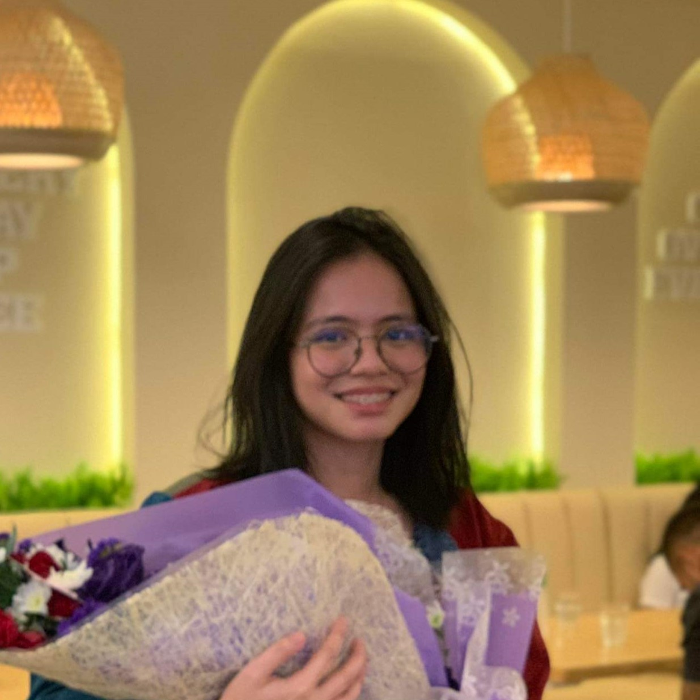

Hey! I am Ariezel M. Bautista
You can call me Arie for short

Favorite CMSC Subject
CMSC 22 would be the winner in the many lists of CMSC subjects.
I enjoyed learning the language of Java and coding in Eclipse!
The topic of OOP is also tricky yet fun to visualize.
Favorite GE
HIST 1 made me learn so much of the importance in valuing history,
and how it influences the events in the present. I took the subject during the recent
elections, and it was interesting to learn ideas and explanations that explain the
current behavior of Filipinos.
Favorite Programming Language
Java would take the crown of being my favorite PL since I like how long
its syntax are and it makes me feel like a programming god when coding in Java.
Favorite Food
My dad's Kare-kare is always my go-to ulam, but today I am currently
craving foods from Chubby Habbi's.